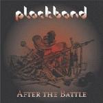

| Artist: | Plackband |
| Title: | After The Battle |
| Label: | Xymphonia Records XYM I002 |
| Length(s): | 61 minutes |
| Year(s) of release: | 2002 |
| Month of review: | [05/2002] |
| 1) | The Battle | 3.28 |
| 2) | After The Battle | 11.18 |
| 3) | See The Dwarf | 6.50 |
| 4) | Sleeping Warriors | 0.52 |
| 5) | End Of The Line | 6.34 |
| 6) | Death And Lost Glory | 0.59 |
| 7) | Ghost Town | 5.17 |
| 8) | The Hunchback | 9.48 |
| 9) | Sign Of The Knife | 8.26 |
| 10) | There Come The Warlords | 3.06 |
| 11) | Remember Forever | 4.23 |
See The Dwarf has an intro that could have been taken of Trick Of The Tail (mmm, wasn't that album released in the era when Plackband earned themselves the nickname 'The Dutch Genesis'?). These keys return throughout this gentle flowing song, although more modern influences are there as well.
End Of The Line has a more full sound, with a strong combination of keys and guitars, radiating strength. The vocals on this one are quite off, though, with Bik more often than not sort of yanking his voice up towards the end of a sentence. Still a pretty good track, flowing gently into the intermezzo Death And Lost Glory. Nice flute, without getting tacky. Works well.
Ghost Town returns the memory of Genesis, specifically the Back In New York City track off The Lamb. This reference doesn't completely dominate the track, showing some other strong parts, with key solos carried by even more keys, but mister Banks remains nigh. Nice track.
The Hunchback is far less striking, returning the gentle strumming guitars and asorted keys. Somehow it would have floated by unnoticed but for the mellotron sounds in the middle, leading unto a section that's more striking, and peps up the track a bit. Still, the first couple of minutes remain pretty much unnecessary.
Sign Of The Knife brings the memory of Pink Floyd's Hey You, which is gone before then of the intro, though. Especially at the beginning Bik comes as near melodic singing as I think he might, which absolutely work in favour. Pretty good track.
There Come The Warlords is an instrumental track. Quite melodic, in early eighties Camel style. Not very original, but rather listenable.
Remember Forever is the rather poppy closer, featuring eighties hard rock backing vocals which are simply darling. The bio mentiones this as a bonus track, the CD liners don't. Anyway, I'm not quite sure this actually adds something: this is the kind of different face you wouldn't think you wanted shown.
The funny thing is, though, that when I listen to it critically, like when I write the track to track discriptions above, things mentioned irritate me, but when I just play the album, without listening too carefully, it sounds fine enough. Well, except for the closer, that's crappy anyway. Go figure.